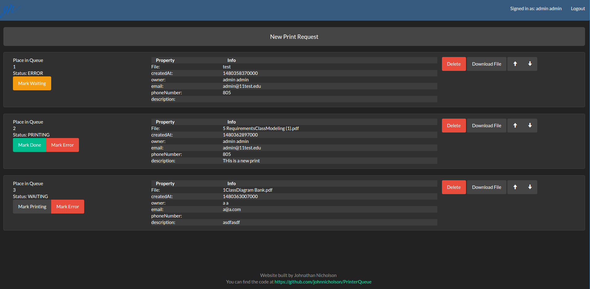

PrinterQueue
Travis-ci:

Purpose
This Project was inspired by a friend who volunteers for the Innovation Sandbox and fellow officers for the cyber security club at Cal Poly when both needed a better way of organizing requests to use their 3D Printer. Previously the Sandbox used a google doc and local document storage.
Design
This project is backed by a tomcat server managed by spring boot. The front end is written in angular. It communicates with the server via a REST API that is documented in the linked document.
Use
Once setup on a server, it can keep track of various locations and individual queues for each. Theses queues can be managed and the status of each print can be adjusted.
Admin
Admins are allowed to create locations, modify the queue for any location and delete requests. They may also change the status of any request.
Standard User
Users are allowed to create print requests at any location, they are also allowed to delete their own requests. they cannot see the requests of other standard users, only their position in the queue.
Rest API Documents
Design Patterns
- Factory Pattern - DAO objects
- Template Method Pattern - Transactions
- Singleton Pattern - Database Session
- Object Pooling - Database Connection Management
High Level Class Diagram

Screenshots
Admin View of the Queue  Create a New Request Register for the website